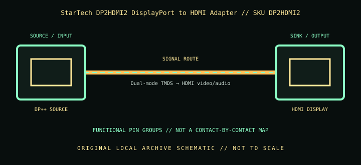

[ INDIVIDUAL COMPONENT // CABLES & ADAPTERS ]
StarTech DP2HDMI2 DisplayPort to HDMI Adapter
A compact passive DP-to-HDMI adapter for a dual-mode DisplayPort output; it is not an active converter and cannot turn an arbitrary DisplayPort source into every HDMI mode.

IDENTIFICATION: Catalog SKU: DP2HDMI2. Record the complete label, regional suffix, hardware model/revision, and cable length printed on the specimen; nearby model variants are not interchangeable by assumption.
Specifications & connector revisions
| Catalog subcategory | Display cables and adapters |
|---|---|
| Manufacturer / SKU | StarTech DP2HDMI2 DisplayPort to HDMI Adapter — DP2HDMI2 |
| Connector ends / length | Full-size DisplayPort male source plug → HDMI Type-A female display socket; approximately 21 cm (8 in) attached lead. |
| Protocol and revision | StarTech rates the passive DP 1.2-family adapter up to 1920 × 1200 / 1080p at 60 Hz with HDMI 1.4-class output and HDCP 1.4 support. Since conversion is passive, the DisplayPort source must support DP++ dual-mode HDMI signaling; actual modes depend on source and HDMI sink. |
| Signal path / pinout | A DP++ source switches its output signaling to a TMDS-compatible mode that the passive adapter routes to HDMI video, clock, control, audio, and grounds. No active DP link-to-HDMI protocol conversion occurs in the adapter. The direction is DisplayPort male source → HDMI female sink. |
| Mode and bandwidth caveats | A 1920 × 1200 maximum and 60 Hz should be read as the adapter’s documented limit, not a promise for every source/HDMI cable/sink. It does not provide HDMI 2.0-class 4K60, HDMI 2.1 features, or a conversion upgrade. The detachable downstream HDMI cable’s length/quality also matters. |
Compatibility & direction
Requires a DP++ (dual-mode) capable DisplayPort output; check the computer/dock manual or DP++ mark. Use a separate HDMI cable from the female socket to the monitor. Not suitable for HDMI source-to-DP display, and a passive dongle is not interchangeable with active DP-to-HDMI equipment for all source configurations.
Handling & archival notes
Keep the stated source and sink ends in their specified direction; do not force keyed connectors or use this product as an assumed voltage/pinout substitute for a superficially similar cable. Support the tether during connection, keep contacts clean and dry, and avoid tight bends at molded strain reliefs.
For the archive, photograph both connector faces, labels, packaging SKU, length, and revision. If a mode is tested, record source model/GPU and firmware, sink model/firmware, intermediate adapters, cable run, resolution, refresh rate, chroma/HDR, and whether HDCP succeeds. Test results apply to that exact chain, not all variants.
Manufacturer and standards sources
- StarTech.com — DP2HDMI2 DisplayPort to HDMI adapterManufacturer product page for passive adapter direction and supported modes.
- StarTech.com — DP2HDMI2 datasheet (PDF)Manufacturer datasheet for adapter limits and connector details.
Maximum modes are source-, sink-, firmware-, signal-path-, and revision-dependent. Manufacturer documentation for the exact SKU and hardware model takes precedence over family names and connector appearance.